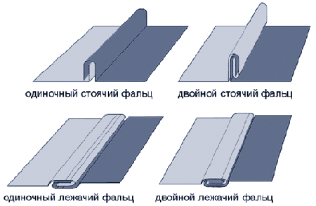

Фальцевая кровля , применение
 Фальцевой кровлей, называется кровля металлическая, произведенная из листовой или рулонной оцинкованной стали, соединенных
фальцами (специальными швами). Фальцевая кровля является весьма распространенной в настоящее время.
Во-первых, она достаточно прочная и при правильной установке исключает протечки.
Во-вторых, материал легок, и поэтому его просто и быстро монтировать.
В-третьих, при использовании оцинкованной стали исключается любая коррозия, включая сквозную, в месте соединения.
Фальцевой кровлей, называется кровля металлическая, произведенная из листовой или рулонной оцинкованной стали, соединенных
фальцами (специальными швами). Фальцевая кровля является весьма распространенной в настоящее время.
Во-первых, она достаточно прочная и при правильной установке исключает протечки.
Во-вторых, материал легок, и поэтому его просто и быстро монтировать.
В-третьих, при использовании оцинкованной стали исключается любая коррозия, включая сквозную, в месте соединения.
Поверхность фальцевой кровли очень гладкая, что обеспечивает хорошее стекание осадков. Кроме этого, данный материал является одним из самых дешевых, и обладает широкой цветовой палитрой. Единственный недостаток подобной кровли – это ее малая сопротивляемость ударам, а также значительный шум во время дождя.
Монтаж, устройство и ремонт фальцевой кровли производится как на стройплощадке, так и непосредственно на чердаке. А возможная предварительная механизированная заготовка элементов кровельного покрытия позволяет по максимуму облегчить процесс его установки.
Картина - элемент кровельного покрытия, у которого кромки подготовлены для фальцевого соединения.
Фальц (фальцевое соединение) - вид шва, образующегося при соединении листов металлической кровли. Различают фальцевые соединения лежачие и стоячие, одинарные и двойные. Боковые длинные края полос стали, идущие вдоль ската, соединяют стоячими фальцами, а горизонтальные - лежачими. Фальцы выполняются (закатываются), либо вручную специальным инструментом, специальными электромеханическими закаточными устройствами. Наиболее герметичным и влагонепроницаемым является двойной стоячий фальц - это продольное соединение, выступающее над плоскостью кровли между двумя прилегающими кровельными картинами, кромки которых имеют двойной загиб.

Металлы, используемые для металлической кровли
Оцинкованная кровельная сталь традиционно была и остается в Украине одним из самых распространенных кровельных материалов. Этот, сравнительно недорогой, легкий в работе материал позволяет устраивать кровли с геометрией практически любой сложности. Листы оцинкованной стали используются также для устройства карнизных свесов, настенных желобов и водосточных труб для кровель из других материалов. Оцинкованная сталь покрыта с обеих сторон слоем цинка, который защищает ее от коррозии.
Кровли из цветных металлов
В качестве кровельных материалов применяются следующие цветные металлы: медь, алюминий и цинк-титановый сплав (D-цинк). Медная кровля в течение первого года службы из красноватой становится сначала коричневой, а затем матово-черной. Такой цвет имеют ее естественные окислы. С течением времени окислы меняют свой цвет на малахитово-зеленый, но для этого необходимо как минимум 15-20 лет. Патина является естественным защитным покрытием меди, надежно предохраняющим ее от коррозии и порчи. Можно сказать, что под патиной медь практически неуязвима. Это обстоятельство непосредственно отражается на продолжительности службы медной кровли, исчисляющейся не десятилетиями, а сотнями лет. Медь прекрасно поддается сварке, что делает ремонт покрытия простым и надежным. Важно учесть, что наличие механических повреждений не требует замены целого листа или полосы, достаточно лишь вырезать медную заплату и заварить (запаять) швы. Заплата очень быстро покроется патиной, и различить отремонтированное место будет очень трудно, практически невозможно. Основные достоинства медных кровель следующие: Самый продолжительный срок службы. Покрываясь под воздействием атмосферных явлений тонким и прочным слоем окисла-патины, она служит верой и правдой как минимум 100-150 лет.
- Отсутствие эксплуатационных расходов. Уложенная заново свежая медная кровля в дальнейшем не требует никакого ухода и наблюдений - ее вообще не надо зачищать и красить.
- Экологическая чистота. Медь не только абсолютно безвредена, но и обладает анаболическими свойствами.
- Ремонтопригодность покрытия. Даже при самых серьезных механических повреждениях медная кровля легко ремонтируется, поскольку медь пластична и легко паяется.
Полимерные покрытия
Для придания металлическим кровлям декоративных свойств и дополнительной защиты от коррозии применяют специальные полимерные покрытия. Они используются на Западе уже более 40 лет и распространены чрезвычайно широко. Стальные кровли с полимерным покрытием зарекомендовали себя как высококачественный и долговечный материал. Стальной оцинкованный лист с полимерным покрытием имеет многослойную структуру: стальной лист, слой цинка, слой грунта, и, наконец, с нижней стороны листа - защитная краска, а с лицевой стороны - слой цветного полимера. Каждый компонент многослойной структуры тщательно подбирается и выполняет свою функцию. Для потребителя необходимо знать, что различные полимерные покрытия характеризуются различной устойчивостью к ультрафиолетовому излучению (цветостойкость), к температуре (термостойкость), агрессивным средам, к механическим повреждениям и другим факторам.
Профилированные (волнистые) листы
Для повышения жесткости металлических листов они подвергаются профилированию, т.е. приданию волнообразной формы. Профилированные или, как их еще называют, гофрированные (волнистые) листы, профнастил производят из оцинкованной стали как с полимерным покрытием, так и без него. Волны на листах могут быть высокими и низкими и иметь трапециевидную, синусообразную или закругленную формы.
Профилированные листы различаются:
- по форме и высоте гофры;
- по ширине готового профиля;
- по условиям применения.
Листы высотой до 20 мм, как правило, применяют в качестве декоративных элементов, без расчета на прочность - подшивные потолки, внутренние и внешние стены, заборы. Листы высотой более 20 мм являются конструктивными элементами, их применение должно подтверждаться расчетами на прочность и прогиб. Заводы-изготовители обычно указывают расчетные характеристики в каталогах. В качестве кровельного материала профилированные листы наиболее часто используются на объектах большой площади в промышленном и гражданском строительстве.
Изготовление и монтаж водосточных систем
Характерной особенностью скатных крыш является устройство наружного водостока, организованного по системе желобов и труб. В зависимости от типа кровельного материала и с учетом пожеланий Заказчиков наша компания осуществляет изготовление и монтаж наружных водосточных систем из металла или пластика. Для медной и оцинкованной фальцевой кровли, кровли из профилированного настила устанавливается система водосточных желобов, лотков и труб из соответствующего материала.
По материалам сайта : http://www.metalroof.com.ua/